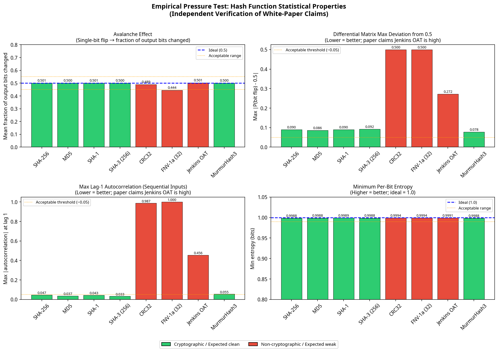
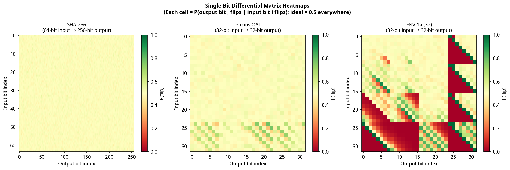

Black-box cryptographic hash assessment toolkit.
Empirically detect statistical weaknesses in hash functions — no math degree required.
In 2013, documents revealed that the NSA had inserted a kleptographic backdoor into the Dual EC DRBG random number generator — a NIST standard. Before that, the CIA operated compromised Crypto AG cipher machines for decades. History demonstrates that cryptographic standards can be deliberately weakened, and that such weaknesses may go undetected for years.
If a hardware security module, a firmware update, or a third-party library implements SHA-256, how do you verify the implementation is faithful? Mathematical proofs are inaccessible to most engineers. Existing test suites check output randomness but miss structural weaknesses that only appear when you look at how the output changes — not just what it looks like.
cryptid treats hash functions as black boxes and applies seven independent statistical and differential tests to detect anomalies that no single method would catch alone.
No single statistical test catches all weakness types. cryptid runs a layered battery — weaknesses invisible to aggregate analysis are caught by differential tests, and weaknesses invisible to both are caught by linear approximation.
Asks: "Does the output look random?" A trained logistic regression meta-classifier combines all six signals into a single probability score. Trained on 288 synthetic variants, achieving 93% detection accuracy with zero false positives on real cryptographic primitives.
Asks: "Does the output change randomly?" Empirical implementation of the Strict Avalanche Criterion and Bit Independence Criterion. Catches CRC32 and Jenkins OAT — both of which pass all aggregate statistical tests.
Asks: "Is there any exploitable algebraic or structural pattern?" Inspired by Matsui's linear cryptanalysis. Tests whether any multi-bit XOR combination of input bits correlates with output bits at six levels of mask complexity.
| Level | Tests Run | Approx. Time (5K samples) | Best For |
|---|---|---|---|
| quick | Statistical suite + meta-learner | ~5s | CI/CD pipeline, every commit |
| standard | + Differential profile | ~10s | Default — good coverage for most audits |
| full | + Extended + Linear approximation | ~40s | Release gate, comprehensive audit |
All 15 cryptographic algorithms tested — including SHA-256, AES-128, SM3, BLAKE2b, and ChaCha20 — produced output statistically indistinguishable from a perfect random oracle at 100,000 samples. The non-cryptographic hashes told a different story.
Jenkins one-at-a-time is widely used in hash tables. It passes every aggregate statistical test — bit correlation, entropy, avalanche, frequency, mutual information. The meta-learner classifies it as clean (P = 0.15). But differential profile analysis tells a different story.
Its single-bit differential matrix shows significant non-uniformity (signal strength: 1.000), and sequential outputs exhibit high autocorrelation. The structural reason: Jenkins' shift-and-add construction has no final mixing pass, creating position-dependent differential structure in the last input bytes.
CRC32's XOR-linearity is algebraic — not statistical. The aggregate suite classifies it as clean (P = 0.11). But differential and sequence correlation tests detect it immediately, confirming that different methods catch different categories of weakness.
SHA-3's sponge construction achieves full 1600-bit state diffusion in just 3 of 24 rounds. SHA-1 requires 20 of 80 rounds to reach 90% diffusion. SM3 achieves nearly double SHA-256's early-round diffusion rate — a deliberate design choice by its authors.
Neither claims cryptographic security, yet both are completely clean across all seven detection methods — indistinguishable from random oracle controls. Statistical quality is a design choice, not an inherent property of complexity.
These visualizations were generated by independently re-implementing the paper's core methodology — not by running the tool itself. The results confirm the paper's findings from scratch.


Pure Python standard library for core functionality. Optional dependencies only for block cipher tests.
git clone https://github.com/r57-labs/cryptid.git && cd cryptid
python cryptid.py test -a sha256 -n 5000 --level quick
python cryptid.py test -i my_hashes.jsonl --level standard
python cryptid.py test --command "openssl dgst -sha256 -hex" -n 2000 --level quick
{"plaintext": "hello world", "hash": "b94d27b9934d3e08a52e52d7da7dabfac484efe37a5380ee9088f7ace2efcde9"}
One JSON object per line. Supports plaintext, input, or message as the input field; hash, output, or digest as the output field.
cryptid doesn't care how a hash was produced. Any implementation that can accept an input and return a hex digest can be tested — HSMs, firmware, vendor libraries, or custom hardware.
Write a thin wrapper that calls your HSM's PKCS#11 interface or vendor CLI, then collect outputs into a JSONL file for batch testing.
# wrapper.py — calls HSM via pkcs11 library
import pkcs11, json, sys
lib = pkcs11.lib('/usr/lib/libCryptoki2_64.so')
token = lib.get_token(token_label='MyHSM')
with token.open(user_pin='1234') as session:
for line in sys.stdin:
plaintext = bytes.fromhex(line.strip())
digest = session.digest(plaintext, mechanism=pkcs11.Mechanism.SHA256)
print(json.dumps({'plaintext': line.strip(), 'hash': digest.hex()}))
python cryptid.py generate -a sha256 -n 10000 -o inputs.jsonl
python wrapper.py < inputs.jsonl > hsm_output.jsonl
python cryptid.py test -i hsm_output.jsonl --level full
# Note: -i (file) mode runs statistical suite only; differential/extended require --command or -a
Script the device over serial or USB, send hex-encoded inputs, capture hex outputs. The compare command lets you diff device output against a known-good reference.
# serial_wrapper.py — reads from embedded device
import serial, json, sys
dev = serial.Serial('/dev/ttyUSB0', 115200)
for line in sys.stdin:
dev.write((line.strip() + '\n').encode())
result = dev.readline().decode().strip()
print(json.dumps({'plaintext': line.strip(), 'hash': result}))
# Compare device output against OpenSSL reference
python cryptid.py compare \
--target device_output.jsonl \
--reference openssl_output.jsonl
If the implementation has a CLI that accepts input on stdin and prints a hex digest, use --command mode directly. cryptid handles both batch-capable tools and single-invocation tools automatically.
# Test any CLI tool that reads stdin, prints hex
python cryptid.py test \
--command "openssl dgst -sha256 -hex" \
-n 2000 --level quick
# Note: --level standard/full with --command spawns many subprocesses and is slow.
# For deep analysis, use the JSONL workflow instead (generate → wrapper → test -i).
# Or a custom binary
python cryptid.py test \
--command "./vendor_hash_tool --algo sha256" \
-n 5000 --level full
The compare command runs both a statistical analysis and a byte-level diff of two JSONL datasets. Use it to verify that a hardware implementation matches a software reference on the same inputs — any deviation is flagged immediately.
# Generate reference vectors from OpenSSL
python cryptid.py generate -a sha256 -n 10000 \
-o reference.jsonl
# Run same inputs through your device, then compare
python cryptid.py compare \
--target device.jsonl \
--reference reference.jsonl
Any output mismatch on shared inputs is reported as a percentage. A faithful implementation should show 100% match and PASS on both statistical suites.
Here's something we want to be upfront about: the lead developer on this project is not a cryptographer. He's not a mathematician. The depth of the methodology in this toolkit — the differential profile analysis, the linear approximation testing, the double-blind calibration protocol — goes well beyond his prior expertise.
That's the point.
We built cryptid as a deliberate test of our AI Native development methodology — a set of techniques for leveraging modern AI to produce work that exceeds what you could accomplish alone. The goal isn't to replace domain expertise. It's to understand how far you can push AI-assisted development into unfamiliar territory, and where the limits are.
We think the results speak for themselves — but we also want to hear from people who actually know this field. If you're a cryptographer, a mathematician, or a security researcher and you see something wrong (or something interesting), we genuinely want to know.